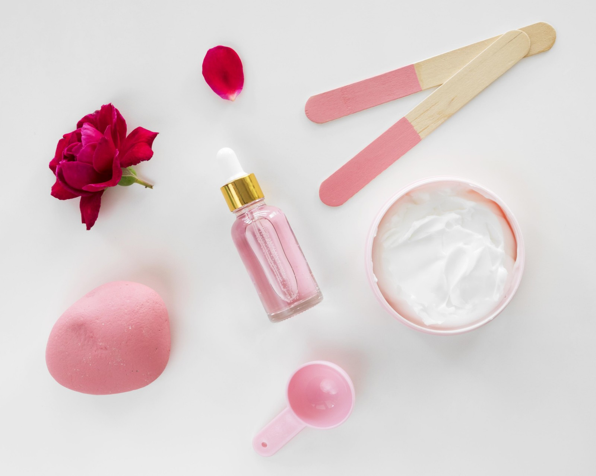

SKINCARE

AM – gentle cleanser, antioxidant, moisturizer, high SPF sunscreen
PM – gentle cleanser, moisturizer, retinol (cream or serum)
Why is good skin care important? Good skin care is important for the
following reasons: It helps your skin stay in good condition: You’re
shedding skin cells throughout the day, so it’s important to keep your
skin glowing and in good condition. An effective routine can help
prevent acne, treat wrinkles, and help keep your skin looking its
best.
Type of skin care textures : Serum Serums contain tiny molecules that
penetrate deeper into the skin, making them lighter and more
nourishing than moisturizers. It absorbs very quickly so you can put a
moisturiser on top. It’s the perfect combination to repair deep skin
while protecting the surface from damage. lotion Similar to a cream
but lighter, the lotion is the perfect consistency if you like layered
products. They get absorbed quickly and don’t stick to the skin or
prevent other products from working. They also contain a small amount,
if any, of oil, making them ideal for summer when the air is humid.
cream Probably one of the most popular skincare textures, creams are
thicker in consistency. This means they’re great for applying on top
of your serums, concentrates and lotions. While they may not penetrate
as deeply into the skin as described above, they form a barrier that
helps prevent further moisture loss. Gel If your skin is prone to oily
or blemishes, the gel texture is for you. The lightweight texture
provides oil-free moisture, which is a treat during the hot months.
Oil Perfect for very dry and sensitive skin, the oil has a rich, silky
skincare texture that absorbs slowly into your skin, deeply hydrating
and restoring your complexion’s moisture levels. I recommend using it
as an overnight treatment to give it time to work its magic. Oh and
don’t worry, contrary to popular belief, oils are not greasy. You just
need to use them sparingly and massage them into the skin properly.
Balms The balm is great for dry skin and has a very rich texture that
is both super soothing and intensely moisturizing. It also helps
prevent irritation. Mousse Like whipped cream, the mousse looks thick
and smooth, but is surprisingly fluffy and fluffy. Often used for fake
tans, this texture smoothes your skin like silk (similar to shaving
cream, but lighter) and dries quickly for a professional-looking
finish. Frosted With a few exceptions, most scrubs are formulated with
tiny beads that give them a rather rough texture. Of course, it’s the
beads that slough off dead skin cells and reveal fresh, smooth skin
underneath. Miceral water Think of micellar water as a refreshing
shower. It consists of tiny oil molecules suspended in water, wiping
away impurities throughout the day in one fell swoop. Oh and it is
great for sensitive skin. Foam Really light and breathable foams are
great for oily skin as they absorb a lot of excess sebum. However,
check the ingredient list for sulfates, as they can dry out your skin.
You should choose a very mild one. Jelly When it comes to skincare
texture, I love a good jelly. While feeling bouncy and bouncy, it
still blends effortlessly into your skin, leaving no residue. It is
usually a refreshing and cool application.